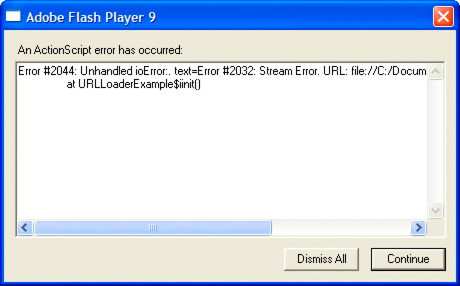

|

Event listeners, which are also
called event handlers, are functions that Flash Player and AIR execute
in response to specific events. Adding an event listener is a two-step
process. First, you create a function or class method for Flash
Player or AIR to execute in response to the event. This is sometimes
called the listener function or the event handler function. Second,
you use the
addEventListener()
method to register
your listener function with the target of the event or any display
list object that lies along the appropriate event flow.
Creating a listener function
The creation of listener functions is one area where the ActionScript
3.0 event model deviates from the DOM event model. In the DOM event
model, there is a clear distinction between an event listener and
a listener function: an event listener is an instance of a class
that implements the EventListener interface, whereas a listener
function is a method of that class named
handleEvent()
. In
the DOM event model, you register the class instance that contains
the listener function rather than the actual listener function.
In the ActionScript 3.0 event model, there is no distinction
between an event listener and a listener function. ActionScript
3.0 does not have an EventListener interface, and listener functions
can be defined outside a class or as part of a class. Moreover,
listener functions do not have to be named
handleEvent()
—they
can be named with any valid identifier. In ActionScript 3.0, you
register the name of the actual listener function.
Listener function defined outside of a class
The following code creates
a simple SWF file that displays a red square shape. A listener function
named
clickHandler()
, which is not part of a class,
listens for mouse click events on the red square.
package
{
import flash.display.Sprite;
public class ClickExample extends Sprite
{
public function ClickExample()
{
var child:ChildSprite = new ChildSprite();
addChild(child);
}
}
}
import flash.display.Sprite;
import flash.events.MouseEvent;
class ChildSprite extends Sprite
{
public function ChildSprite()
{
graphics.beginFill(0xFF0000);
graphics.drawRect(0,0,100,100);
graphics.endFill();
addEventListener(MouseEvent.CLICK, clickHandler);
}
}
function clickHandler(event:MouseEvent):void
{
trace("clickHandler detected an event of type: " + event.type);
trace("the this keyword refers to: " + this);
}
When a user interacts with the resulting SWF file
by clicking on the square, Flash Player or AIR generates the following
trace output:
clickHandler detected an event of type: click
the this keyword refers to: [object global]
Notice
that the event object is passed as an argument to
clickHandler()
. This
allows your listener function to examine the event object. In this
example, you use the event object's
type
property
to ascertain that the event is a click event.
The example
also checks the value of the
this
keyword. In this
case,
this
represents the global object, which
makes sense because the function is defined outside of any custom
class or object.
Listener function defined as a class method
The
following example is identical to the previous example that defines
the ClickExample class except that the
clickHandler()
function
is defined as a method of the ChildSprite class:
package
{
import flash.display.Sprite;
public class ClickExample extends Sprite
{
public function ClickExample()
{
var child:ChildSprite = new ChildSprite();
addChild(child);
}
}
}
import flash.display.Sprite;
import flash.events.MouseEvent;
class ChildSprite extends Sprite
{
public function ChildSprite()
{
graphics.beginFill(0xFF0000);
graphics.drawRect(0,0,100,100);
graphics.endFill();
addEventListener(MouseEvent.CLICK, clickHandler);
}
private function clickHandler(event:MouseEvent):void
{
trace("clickHandler detected an event of type: " + event.type);
trace("the this keyword refers to: " + this);
}
}
When a user interacts with the resulting SWF file
by clicking on the red square, Flash Player or AIR generates the
following trace output:
clickHandler detected an event of type: click
the this keyword refers to: [object ChildSprite]
Note
that the
this
keyword refers to the ChildSprite
instance named
child
. This is a change in behavior
from ActionScript 2.0. If you used components in ActionScript 2.0,
you may remember that when a class method was passed in to
UIEventDispatcher.addEventListener()
,
the scope of the method was bound to the component that broadcast
the event instead of the class in which the listener method was
defined. In other words, if you used this technique in ActionScript
2.0, the
this
keyword would refer to the component
broadcasting the event instead of the ChildSprite instance.
This
was a significant issue for some programmers because it meant that
they could not access other methods and properties of the class
containing the listener method. As a workaround, ActionScript 2.0
programmers could use the
mx.util.Delegate
class
to change the scope of the listener method. This is no longer necessary,
however, because ActionScript 3.0 creates a bound method when
addEventListener()
is
called. As a result, the
this
keyword refers to the
ChildSprite instance named
child
, and the programmer
has access to the other methods and properties of the ChildSprite
class.
Event listener that should not be used
There is a third technique
in which you create a generic object with a property that points
to a dynamically assigned listener function, but it is not recommended.
It is discussed here because it was commonly used in ActionScript
2.0, but should not be used in ActionScript 3.0. This technique
is not recommended because the
this
keyword will
refer to the global object instead of your listener object.
The
following example is identical to the previous ClickExample class
example, except that the listener function is defined as part of
a generic object named
myListenerObj
:
package
{
import flash.display.Sprite;
public class ClickExample extends Sprite
{
public function ClickExample()
{
var child:ChildSprite = new ChildSprite();
addChild(child);
}
}
}
import flash.display.Sprite;
import flash.events.MouseEvent;
class ChildSprite extends Sprite
{
public function ChildSprite()
{
graphics.beginFill(0xFF0000);
graphics.drawRect(0,0,100,100);
graphics.endFill();
addEventListener(MouseEvent.CLICK, myListenerObj.clickHandler);
}
}
var myListenerObj:Object = new Object();
myListenerObj.clickHandler = function (event:MouseEvent):void
{
trace("clickHandler detected an event of type: " + event.type);
trace("the this keyword refers to: " + this);
}
The results of the trace will look like this:
clickHandler detected an event of type: click
the this keyword refers to: [object global]
You would
expect that
this
would refer to
myListenerObj
and
that the trace output would be
[object Object]
,
but instead it refers to the global object. When you pass in a dynamic
property name as an argument to
addEventListener()
,
Flash Player or AIR is unable to create a bound method. This is
because what you are passing as the
listener
parameter
is nothing more than the memory address of your listener function,
and Flash Player and AIR have no way to link that memory address
with the
myListenerObj
instance
.
Managing event listeners
You can manage your listener
functions using the methods of the IEventDispatcher interface. The
IEventDispatcher interface is the ActionScript 3.0 version of the
EventTarget interface of the DOM event model. Although the name
IEventDispatcher may seem to imply that its main purpose is to send
(or dispatch) event objects, the methods of this class are actually
used much more frequently to register event listeners, check for
event listeners, and remove event listeners. The IEventDispatcher
interface defines five methods, as shown in the following code:
package flash.events
{
public interface IEventDispatcher
{
function addEventListener(eventName:String,
listener:Object,
useCapture:Boolean=false,
priority:Integer=0,
useWeakReference:Boolean=false):Boolean;
function removeEventListener(eventName:String,
listener:Object,
useCapture:Boolean=false):Boolean;
function dispatchEvent(eventObject:Event):Boolean;
function hasEventListener(eventName:String):Boolean;
function willTrigger(eventName:String):Boolean;
}
}
The
Flash Player API implements the IEventDispatcher interface with
the EventDispatcher class, which serves as a base class for all
classes that can be event targets or part of an event flow. For
example, the DisplayObject class inherits from the EventDispatcher
class. This means that any object on the display list has access
to the methods of the IEventDispatcher interface.
Adding event listeners
The
addEventListener()
method
is the workhorse of the IEventDispatcher interface. You use it to
register your listener functions. The two required parameters are
type
and
listener
.
You use the
type
parameter to specify the type of
event. You use the
listener
parameter to specify
the listener function that will execute when the event occurs. The
listener
parameter
can be a reference to either a function or a class method.
Do
not use parentheses when you specify the
listener
parameter.
For example, the
clickHandler()
function is specified
without parentheses in the following call to the
addEventListener()
method:
addEventListener(MouseEvent.CLICK, clickHandler)
The
useCapture
parameter
of the
addEventListener()
method allows you to
control the event flow phase on which your listener will be active.
If
useCapture
is set to
true
,
your listener will be active during the capture phase of the event
flow. If
useCapture
is set to
false
,
your listener will be active during the target and bubbling phases
of the event flow. To listen for an event during all phases of the
event flow, you must call
addEventListener()
twice,
once with
useCapture
set to
true
,
and then again with
useCapture
set to
false
.
The
priority
parameter
of the
addEventListener()
method is not an official
part of the DOM Level 3 event model. It is included in ActionScript
3.0 to provide you with more flexibility in organizing your event
listeners. When you call
addEventListener()
, you
can set the priority for that event listener by passing an integer
value as the
priority
parameter. The default value
is 0, but you can set it to negative or positive integer values.
The higher the number, the sooner that event listener will be executed.
Event listeners with the same priority are executed in the order
that they were added, so the earlier a listener is added, the sooner
it will be executed.
The
useWeakReference
parameter
allows you to specify whether the reference to the listener function
is weak or normal. Setting this parameter to
true
allows
you to avoid situations in which listener functions persist in memory even
though they are no longer needed. Flash Player and AIR use a technique called
garbage collection
to
clear objects from memory that are no longer in use. An object is
considered no longer in use if no references to it exist. The garbage collector
disregards weak references, which means that a listener function
that has only a weak reference pointing to it is eligible for garbage
collection.
Removing event listeners
You
can use the
removeEventListener()
method to remove
an event listener that you no longer need. It is a good idea to
remove any listeners that will no longer be used. Required parameters
include the
eventName
and
listener
parameters,
which are the same as the required parameters for the
addEventListener()
method.
Recall that you can listen for events during all event phases by
calling
addEventListener()
twice, once with
useCapture
set
to
true
, and then again with it set to
false
.
To remove both event listeners, you would need to call
removeEventListener()
twice,
once with
useCapture
set to
true
,
and then again with it set to
false
.
Dispatching events
The
dispatchEvent()
method
can be used by advanced programmers to dispatch a custom event object
into the event flow. The only parameter accepted by this method
is a reference to an event object, which must be an instance of
the Event class or a subclass of the Event class. Once dispatched,
the
target
property of the event object is set
to the object on which
dispatchEvent()
was called.
Checking for existing event listeners
The final two methods of the IEventDispatcher
interface provide useful information about the existence of event
listeners. The
hasEventListener()
method returns
true
if
an event listener is found for a specific event type on a particular
display list object. The
willTrigger()
method also
returns
true
if a listener is found for a particular
display list object, but
willTrigger()
checks for
listeners not only on that display object, but also on all of that
display list object’s ancestors for all phases of the event flow.
Error events without listeners
Exceptions,
rather than events, are the primary mechanism for error handling
in ActionScript 3.0, but exception handling does not work for asynchronous
operations such as loading files. If an error occurs during such
an asynchronous operation, Flash Player and AIR dispatch an error
event object. If you do not create a listener for the error event,
the debugger versions of Flash Player and AIR will bring up a dialog
box with information about the error. For example, the debugger
version of Flash Player produces the following dialog box describing the
error when the application attempts to load a file from an invalid
URL:

Most
error events are based on the ErrorEvent class, and as such will
have a property named
text
that is used to store
the error message that Flash Player or AIR displays. The two exceptions
are the StatusEvent and NetStatusEvent classes. Both of these classes
have a
level
property (
StatusEvent.level
and
NetStatusEvent.info.level
).
When the value of the
level
property is "
error
",
these event types are considered to be error events.
An error event will not cause
a SWF file to stop running. It will manifest only as a dialog box
on the debugger versions of the browser plug-ins and stand-alone players,
as a message in the output panel in the authoring player, and as
an entry in the log file for Adobe Flash Builder. It will not manifest
at all in the release versions of Flash Player or AIR.
|
|
|